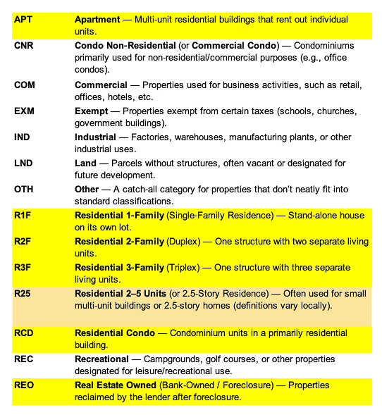
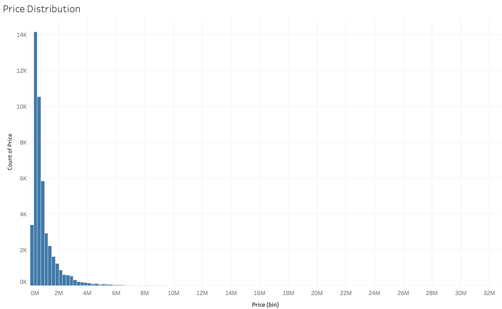
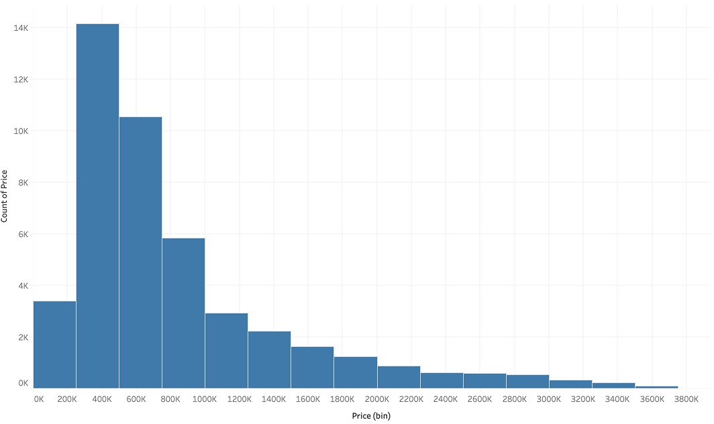
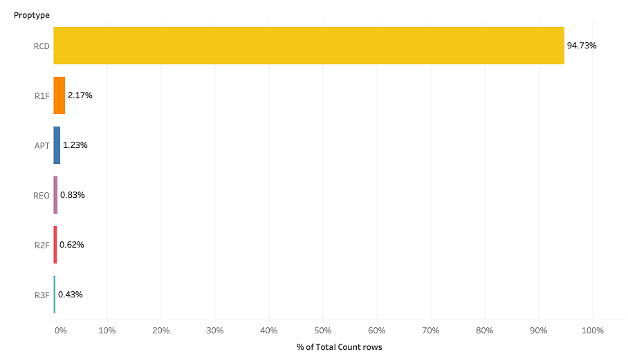
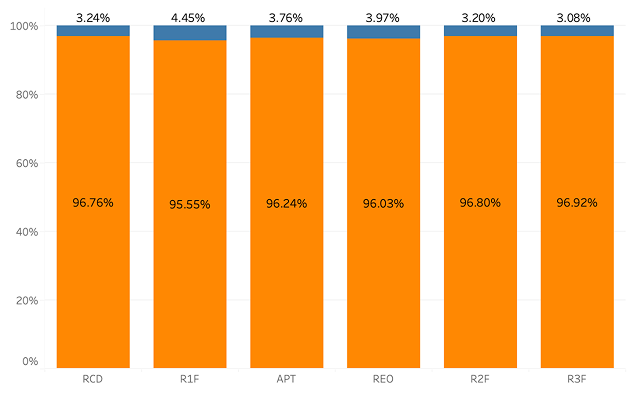
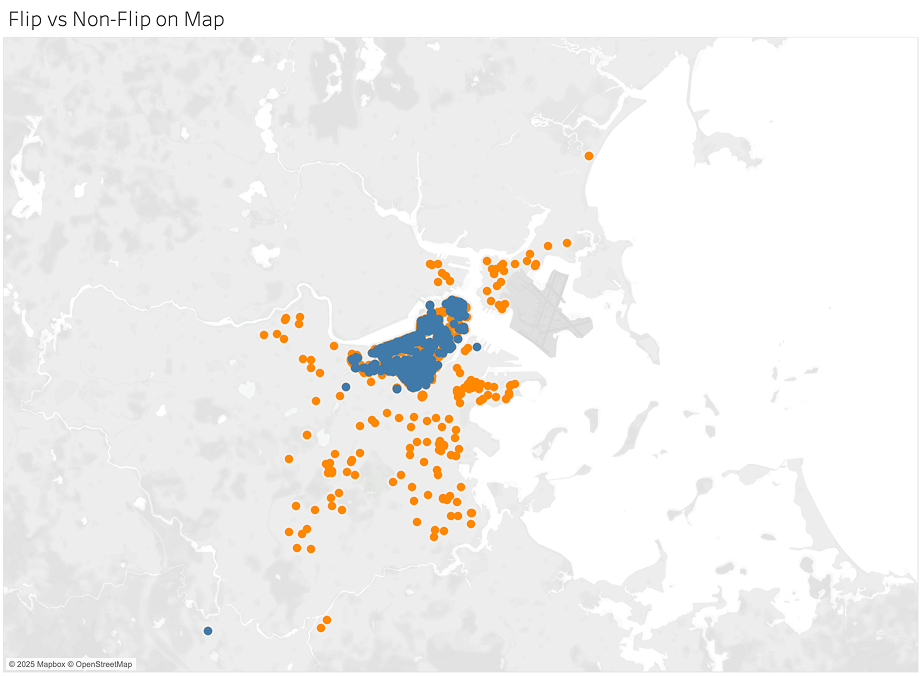
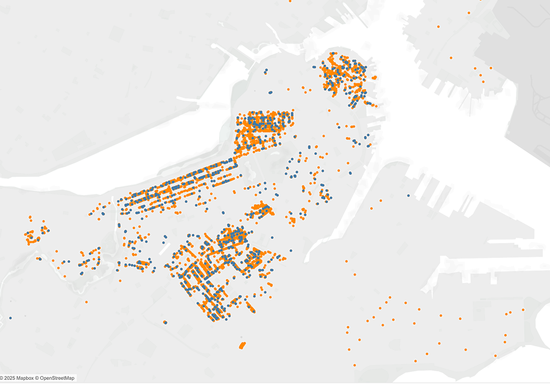
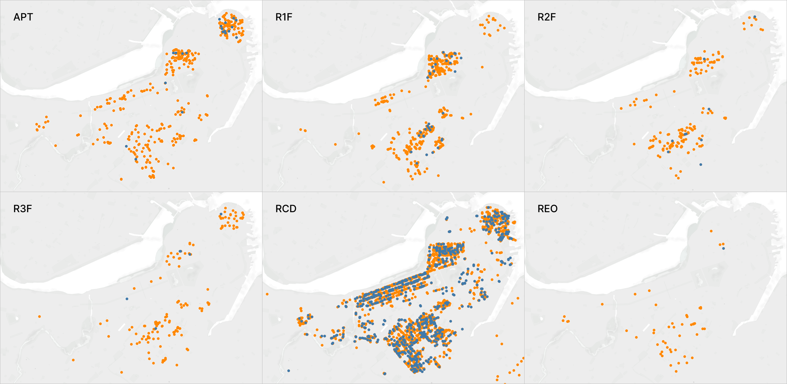

Subtheme: Speculation
Overall Analysis Questions
- How do areas with higher investor activity relate to rates of tenant displacement or eviction filings over time? I’m interested in the triggers of tenant displacement and how it reshapes the neighborhood. It would be interesting to look at investor activity in various dimensions: number of purchases, flips, time it takes to flip, price difference between each sale, type of investor/buyer, and many more etc. All these dimensions have the potential to meaningfully impact the magnitude of displacement. I really enjoyed how the ProPublica article highlighted specific stories of renters, following their displacement from San Francisco to neighboring suburbs. This definitely resonates when I think about how much our rent went up in Manhattan right before we moved to Cambridge (by $1,000!) and how moving back after school definitely means we’ll be living in Brooklyn if we want a similar standard. By examining these metrics alongside displacement data, we could potentially map broader migration patterns of renters and better understand the cascading effects of investment patterns on community stability.
- What demographic and socioeconomic patterns emerge among displaced families? Building on the human narratives highlighted in the ProPublica article, I aim to develop a more comprehensive understanding of displacement's impact through aggregate data. A better understanding of the demographics, occupation, age, years lived in Boston, among other characteristics, would help humanize the stories, allowing us to better contextualize individual stories within broader community patterns. Combining this quantitative approach with the ProPublica article’s qualitative accounts could be a powerful way to show which communities bear the greatest burden and potentially revealing systemic patterns.
- How does absentee ownership manifest by neighborhood or by property value? While the Boston Globe article focused primarily on absentee ownership in luxury developments, I'm interested in examining if this extends beyond high-end properties. I want to find ways to further quantify the impact of this phenomenon and get a sense of its scale (both in terms of absolute number and monetary value), prevalence (is it really only in high-luxury buildings), and impact (how much tax revenue is generated). This exploratory analysis might reveal unexpected patterns and generate new questions about how vacant properties affect Boston's housing ecosystem.
Discoveries & Insights
Understanding the variables
Price distribution
Price distribution excluding outliers
Property type distribution
Flip rates by property type
Where are the transactions being flipped?
 Isolating each property type
- APT flips are clustered mostly in Boston's downtown and Beacon Hill areas
- Single-family (R1F) and two-family (R2F) home flips showed similar geographic concentration, primarily appearing in the prestigious and more historic neighborhoods of Beacon Hill, Back Bay, and South End.
- Condo (RCD) flips displayed a much more dispersed pattern across the city, indicating that condo flipping operates under different dynamics and opportunities city-wide.
- The near-absence of foreclosure (REO) flips, with only one observed, suggests that despite their potential for profit, foreclosed properties may not be playing a significant role in Boston's flipping landscape.
Summary
In exploring speculation within Boston's housing market, I began with three key questions centered on investor activity, displacement, and absentee ownership. After filtering out non-residential properties, ultra-luxury outliers, and nominal $1 transfers, I found that condominiums (RCD) overwhelmingly dominate the residential transaction volume (94.73% of sales), though flipping rates remained surprisingly consistent across property types (3.08%–4.45%). Mapping revealed flips concentrated in central urban neighborhoods, with distinct patterns by property type—apartment flips clustered downtown and in Beacon Hill, while single- and two-family flips appeared in historic high-end areas. While this analysis provided valuable insights into property sale patterns, limitations in the focus of my data prevented deeper investigation of tenant displacement and demographic impacts, key aspects of my initial research questions that would benefit from additional data sources in future analyses.